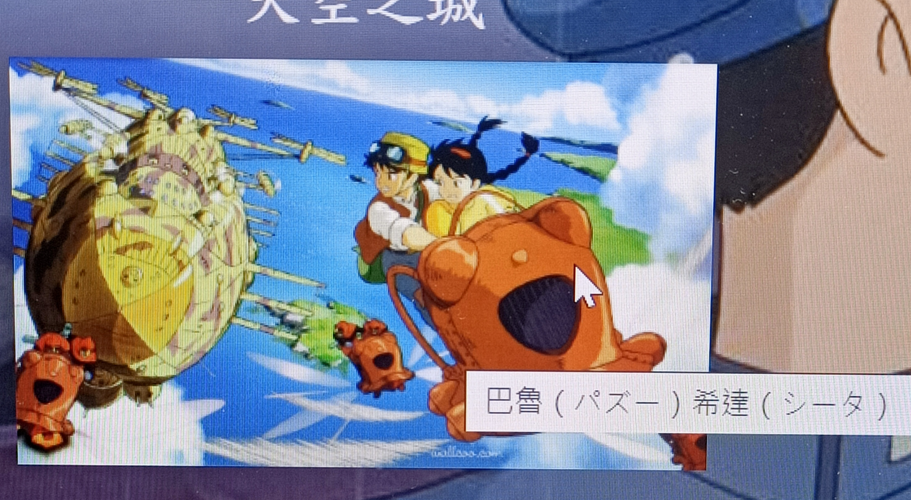

創作理念
理由
這次網頁設計我選擇介紹的主題是宮崎駿，因為他是我非常喜歡的一個藝術家，而且除了維基百科，好像沒有一個特別完整的網頁在介紹他，所以我就自己製作了一個。整體設計上採用偏暗色系的主題，且大致為簡約便利風格為主。
在背景的挑選上都是跟宮崎駿有關的動畫作品當中的場景，也盡量選用較為單一的桌布，使畫面不會過於凌亂，這邊有參考youtube的排版。
導覽列

這邊主要的設計概念是想讓進來參觀網頁的人一眼就能夠了解我的網頁有什麼，我也設計兩個有下拉式選單的按鈕，讓閱覽者更加方便找到自己想看的。另外前面這個gif圖也是我自己製作的，目的是為了讓網頁看起來有趣一點。
這邊幫下拉式選單做了顏色調整，讓整個網頁看起來有完整性，因為原本的白色顯得有點突兀。
這邊原本是想要把所有宮崎駿參與製作過的動畫放上，但後來我只挑選五張最具代表性的圖片是因為瀏覽者停留在這邊的時間較為短。
原本這邊是沒有東西的，但後來因為我覺得整個主頁顯得過於空曠，所以加了這麼個表格，把後面沒有說明到的動畫放到這邊來。
想說都到了尾端應該要給瀏覽者一個小趣味，所以製作了宮崎駿本人照片的跑馬燈。另外那三個按鈕只有最右邊的可以使用，目的是為了方便閱覽者快速回到上方。
這邊主要分為三大部分，第一部分是名稱，第二部分為劇情簡述，第三部分為音樂欣賞與電影海報。點擊就會連結到youtube上，我精心挑選的預告片以及音樂欣賞。每一個作品介紹之間都有線把他們隔開，這樣看起來畫面不至於粘再一起。

怕大家沒有看過宮崎駿的作品，所以標上了照片上出現的人的名字。